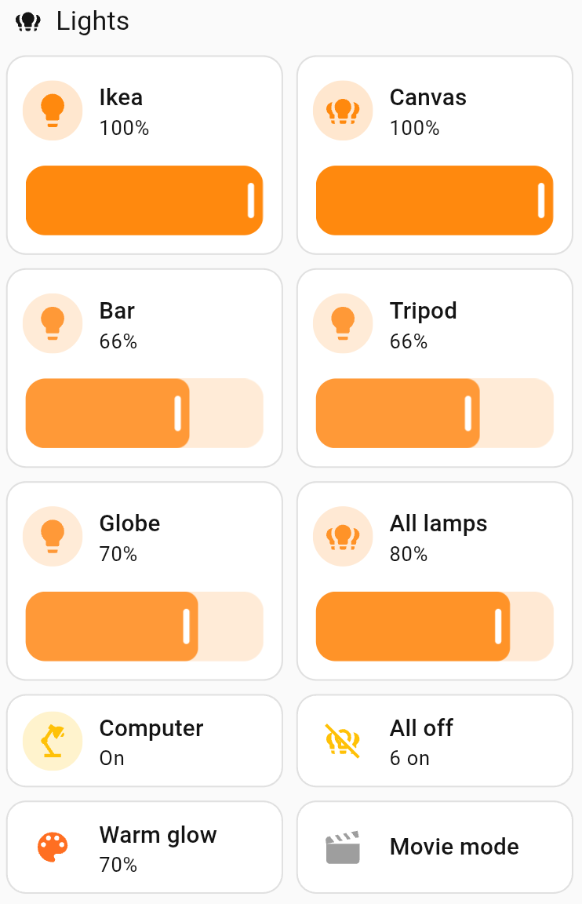

Home Server
I turned a Mac mini into a Home Assistant server that ties together my lights, TV, thermostat, robot vacuum, and my cat's feeder, with custom dashboards for a wall tablet, my phone, and the TV.
Overview
The server is a headless Mac mini running Home Assistant natively in a Python virtual environment. macOS launch agents start it, instead of Docker or Home Assistant OS, and a Matter server and Thread border router run alongside it for the newer bulbs. I reach it from outside the house through Tailscale without opening any ports. Every configuration change goes through a small check, validate, and restart script and then gets committed to Git, so I can roll back a bad change or rebuild the whole setup.
Dashboards and controls
I built the dashboards with Mushroom cards and card-mod. There's a control panel for the wall tablet, a phone dashboard, and a "newspaper" page with the weather, the news, and a quick read on the house. The lamps are grouped by room, and each one has brightness, color temperature, and color controls. Modes like Movie and Warm Glow set the whole room at once, and a wake-up routine brings the bedroom lamps up in the morning.
The Fire TV and the Samsung TV share one panel with a remote and a single TV power button. My Fire TV HUD runs off this same server, so the TV can show the lamps, modes, and alerts too.
Designing for failure
The most interesting problems were about what happens when something breaks. My cat's feeder once missed a meal during a Wi-Fi outage because it depended on Home Assistant, so I flipped the design. Now the feeder runs its own schedule, and Home Assistant only watches it, alerts me if a meal is missed or the hopper runs low, and steps in as a backup. I also traced a recurring feeder lockup to a known firmware issue in the Tuya local protocol and wrote up a recovery procedure for it.
Custom cards kept failing to load after updates because the app cached an old resource list. I moved them to load through the frontend's extra module setting, so Home Assistant injects them on every page load and the dashboards stay consistent.
House-sitter mode
For trips, a vacation mode pauses the routines meant for when I'm home and holds the robot vacuum until just before I get back. A house sitter gets their own account with a stripped-down dashboard: lamp controls that switch themselves off after an hour, a way to feed the cat, and written instructions for the house. Everything else stays admin-only.
Screenshots


